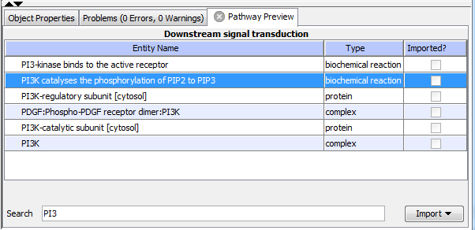

After pressing Preview button or double clicking the pathway the Pathway Preview table shows the interactions (i.e. biochemical reaction, transport, transport with biochemical reaction) and the physical entities (i.e. proteins, small molecules, complexes, DNA, RNA) it contains.
The Pathway Preview shows all entities from a pathway that can be added to the pathway model. It has three columns: the first contains an entity name, the second the (BioPAx Level 2) type of entity, and the third shows whether this entity is already imported into the VCell. At the bottom, there is a search text field to filter results and an add button to add selected entities to the pathway model.
Clicking on table headers Entity Name or Type will sort entries in alphanumeric order.
Search allows the user to search for text in the table
based on the search string entered by the user.
The table is filtered to display those entities that match the given search string.
To select an entity, click on its raw. To select multiple entities, use Shift and Ctrl buttons as in Excel.
Checked checkboxes in Imported? column show entities that are already added to the pathway model.

After entities have been selected, pressing the Import button import these entities and all relevant database information and will add them to the pathway model. There are several options for import: